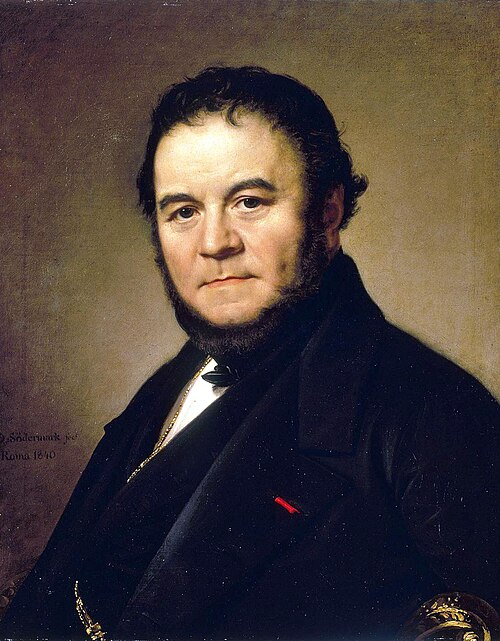

İlginç Vakalar & Analizler
Bilgi Küpü
Tarihin, bilimin ve insan zihninin sıra dışı köşelerine yolculuk; nörolojik mucizelerden sanatsal zehirlenmelere uzanan gizemli vakalar.

Phineas Gage
Demir Çubuğun Gölgesinde
1848'de geçirdiği kaza sonucu beynine saplanan demir çubukla hayatta kalan ancak kişiliği tamamen değişen Phineas Gage'in tıp tarihini değiştiren gizemli hikâyesi.
Vakayı Keşfet →
Floransa Sendromu
Sanat Zehirlenmesi
Bir sanat eseri karşısında kalp çarpıntısı, baş dönmesi ve baygınlık hissiyle ortaya çıkan, adını ünlü yazar Stendhal'den alan büyüleyici ve gizemli psikosomatik sendrom.
Sendromu Keşfet →